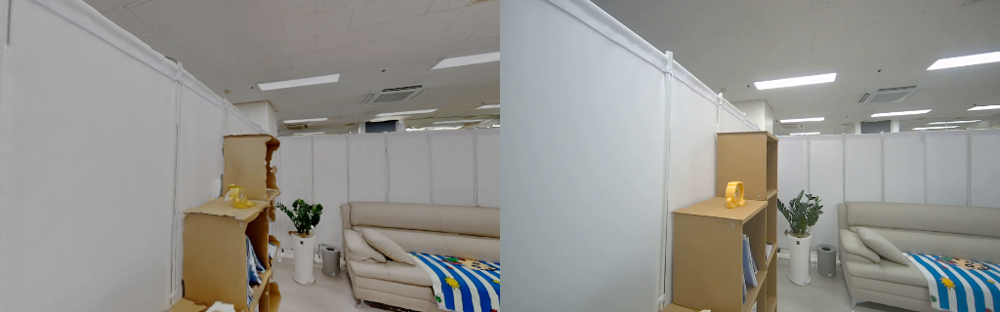

VFM 3D Sensor Data
여러 센서로 수집한 3D 공간 데이터를 검증하고 좌표를 맞춰, 연구개발 팀이 바로 쓰는 형태로 전달
- 역할
- 회사 업무, 수집 검증부터 정합, 라벨링, 전달까지 (SLAM·재구성 연산은 외부 도구)
- 기간
- 2025.09 ~ 2026.02, 이후 유지보수
- 결과
- 정합 점군, 변환 행렬, RGB, 카메라 파라미터를 표준 구조로 전달
개요
VFM 연구에 쓸 3D 공간 데이터를 Matterport, LiDAR, 스테레오 카메라, IMU로 수집하고, 누락 검증, 좌표 정합, 점군 라벨링, 업로드까지 맡아 연구개발 팀에 전달
수집부터 전달까지의 문제
센서가 여러 개이고 데이터가 커서, 문제를 늦게 발견하거나 같은 일을 반복하는 지점이 많았음
- 수집이 끝난 뒤에야 데이터 누락을 알게 됨
- 센서마다 좌표와 시점이 달라 그대로는 함께 쓸 수 없음
- 같은 장면을 실수로 다시 올리면 데이터셋이 중복됨
- 새 데이터셋마다 클래스 이름과 색상을 다시 설정해야 함
현장 검증과 좌표 정합
문제는 현장을 떠나기 전에 찾고, 정합 결과는 눈으로 확인한 뒤에만 넘김
- 수집 검증
- 수집 직후 필수 ROS 토픽의 메시지 수를 자동으로 세고, 기준에 못 미치면 알림. 현장을 떠나기 전에 다시 수집할지 판단
- 좌표 정합
- Matterport 기준 스캔과 LiDAR SLAM 맵을 Point-to-Plane ICP로 정합
- 정합 확인
- 변환 행렬을 적용한 뒤 점군 렌더링과 카메라 RGB 시점을 비교하고, 기준 대비 오차로 사용 가능 여부를 판단
- 판단
- SLAM 결과를 그대로 쓰지 않음. 궤적이 발산한 사례를 조사하고 이미지 기반 포즈로 정합 대안을 시도. 정합 품질이 낮은 결과에는 사용 주의를 기록
- 전달
- 정합 점군, 변환 행렬, RGB, 카메라 파라미터를 표준 구조로 정리해 연구개발 팀이 바로 쓸 수 있게 함

라벨링 반복 작업 자동화
실내 장면 점군 라벨링을 직접 하면서, 업로드와 라벨 내려받기를 명령 하나로 묶음
- 중복 확인
- 상위 폴더 이름을 장면 ID로 데이터셋 설명에 기록하고, 같은 ID의 데이터셋과 샘플이 있으면 건너뜀
- 라벨 설정
- 새 데이터셋에 기존에 쓰던 클래스 이름과 색상을 공용 설정 파일에서 그대로 적용
- 자세 값
- API로 올릴 때 필요한 자세와 높이 값을 API 문서에 맞춰 기본값으로 채움
- 병렬 처리
- 스레드 풀로 업로드를 동시에 진행
- 라벨 변환
- 업로드한 점군을 다시 받아 점 순서와 점별 라벨을 맞추고, 서버의 클래스 색으로 저장해 시각화로 확인
임시 우회 구조와 제거
API가 데이터셋 목록을 100개까지만 돌려주던 시기에는 우회 구조로 조회를 유지했고, 전체 페이지를 읽을 수 있게 되자 우회 구조를 걷어냄
- 2026.04 우회
- 목록 밖으로 밀려날 오래된 데이터셋을 미리 골라 보조 계정에 조회 권한을 붙임. 동작은 했지만 계정과 권한이 계속 늘어나는 구조
- 2026.10 단순화
- 권한을 건드리지 않고 모든 페이지를 읽도록 교체. 같은 페이지가 반복되면 불완전한 목록으로 진행하지 않고 멈춤. 단위 테스트로 확인
결과
- 전달
- 정합된 점군, 변환 행렬, RGB를 표준 구조로 정리해 연구개발 팀에 전달
- 자동화
- 수집 직후 누락 확인과 반복 업로드를 도구화. 중복 업로드 자동 차단, 라벨 설정 자동 적용, 점 순서를 유지한 라벨 변환
- 정리
- 데이터셋 목록 우회 구조를 폐기하고 전체 페이지 순회로 교체
- 준비
- 장면별 클래스 구성 분석 기능을 학습 데이터 선별용 확장 기능으로 마련
- 범위 밖
- SLAM과 재구성 연산은 외부 도구가 수행. ICP 알고리즘 자체를 개발한 것은 아님